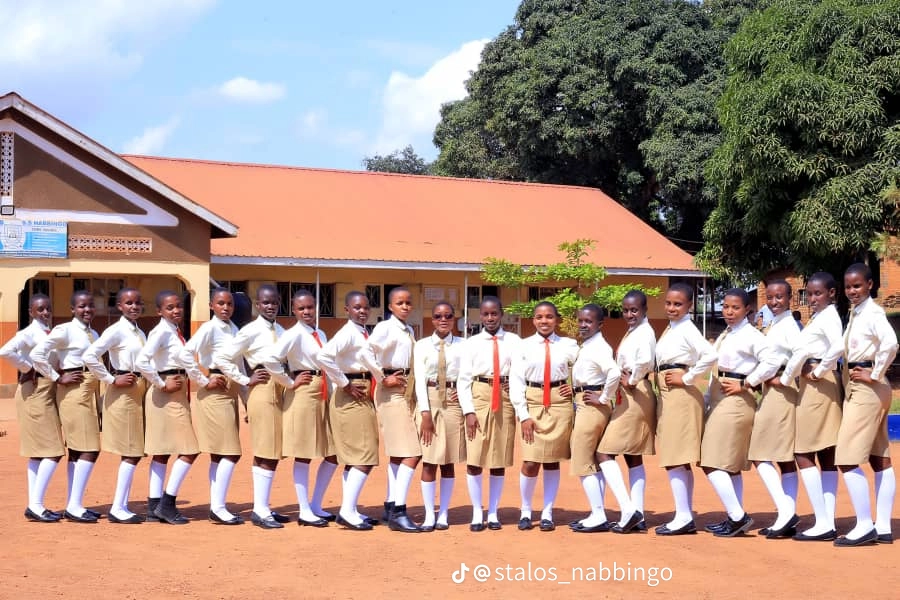
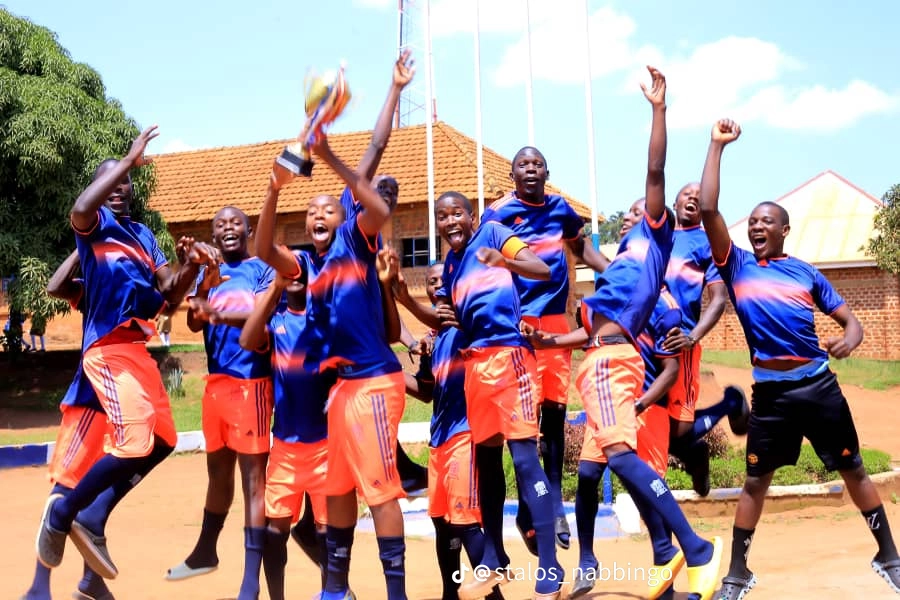
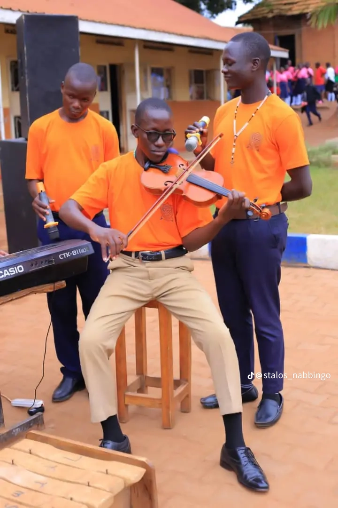
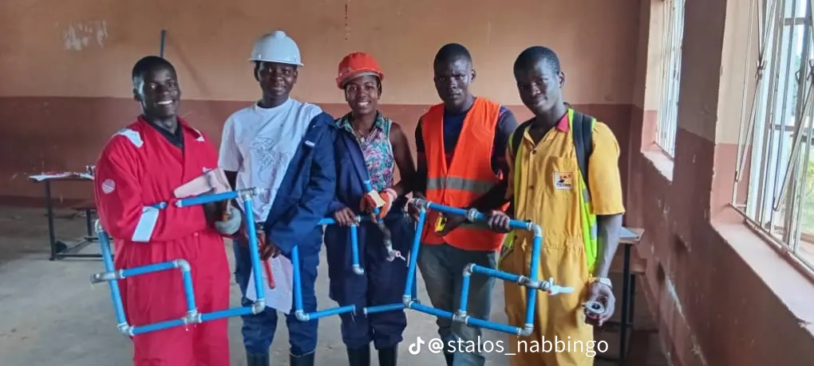

Quality Academics
O-Level and A-Level programmes focused on strong results and practical skills.
A mixed day and boarding Catholic secondary school providing quality, affordable education in the Archdiocese of Kampala.

Clear values, steady leadership, and holistic education for every student.
O-Level and A-Level programmes focused on strong results and practical skills.
Catholic foundation that welcomes all, forming disciplined, responsible young people.
Vocational training, music, sports, and clubs that prepare students beyond the classroom.
Students, sports, music, and skills — every day on campus.





Sports, music, and co-curricular life are central to STALOS.
View GalleryA short look at STALOS in action.
Recent improvements that make a real difference.
Main hall completed, reliable water system, kitchen and toilets renovated, classrooms refreshed. Next: multi-storey building and perimeter wall.
Music tradition, vocational skills (DIT), games, clubs, and a strong PTA.

Nearly half board, supported under Head Teacher Mr. Matte Paul Remmy Kizito.
Admissions Info"STALOS was not just a place of learning; it was a community that nurtured my dreams."
"Significant improvements in academic performance — students shining academically and in personal development."